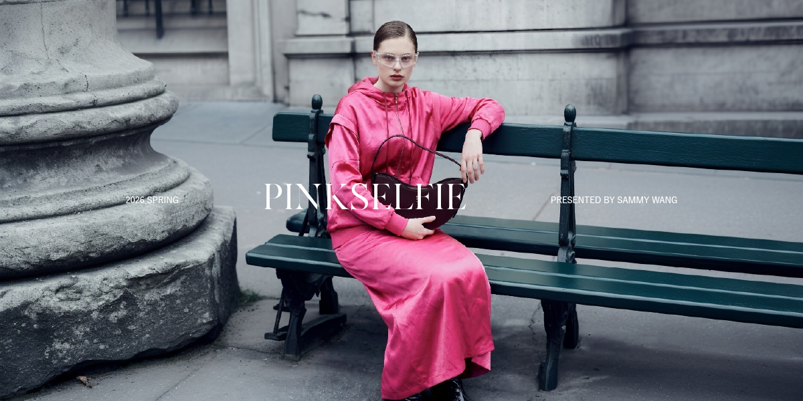
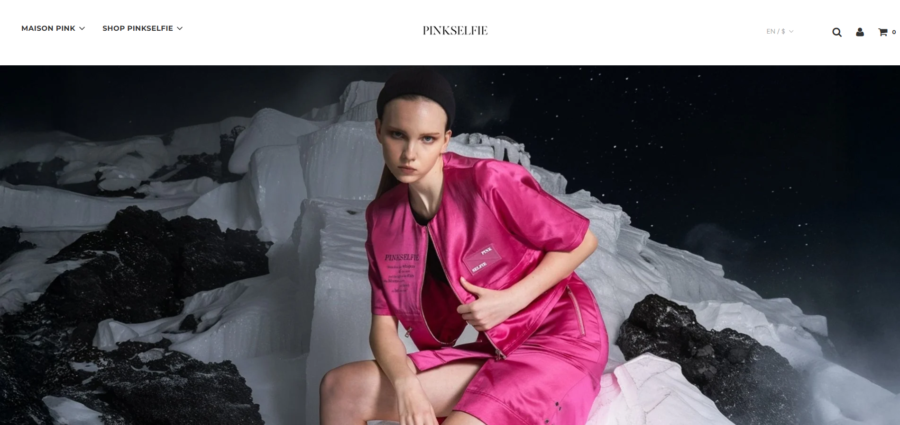
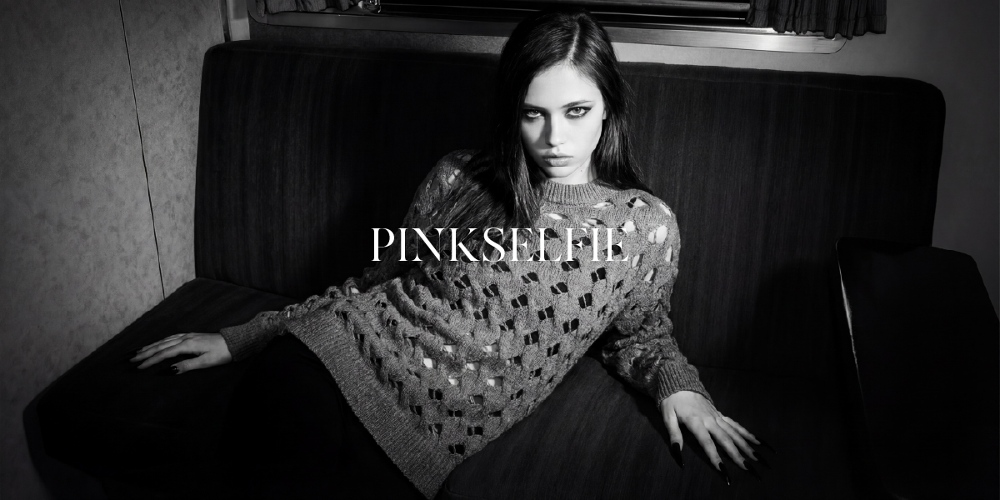
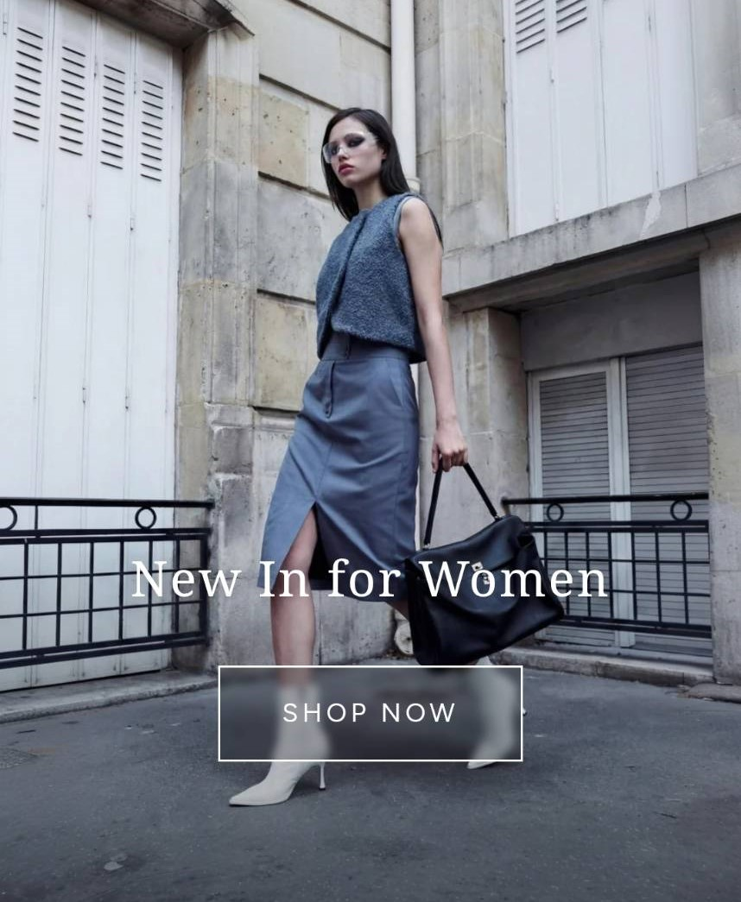
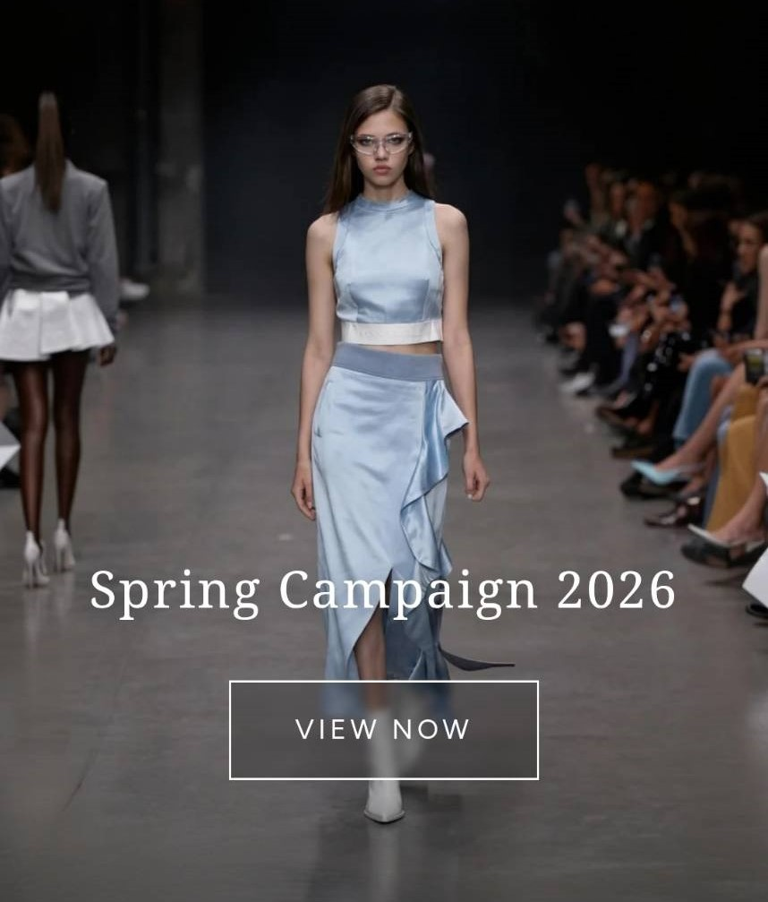
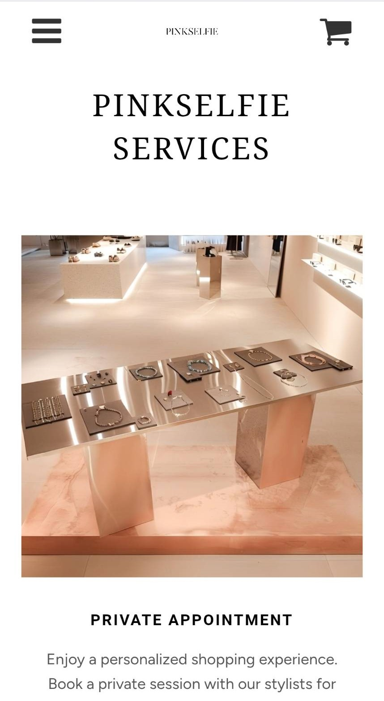
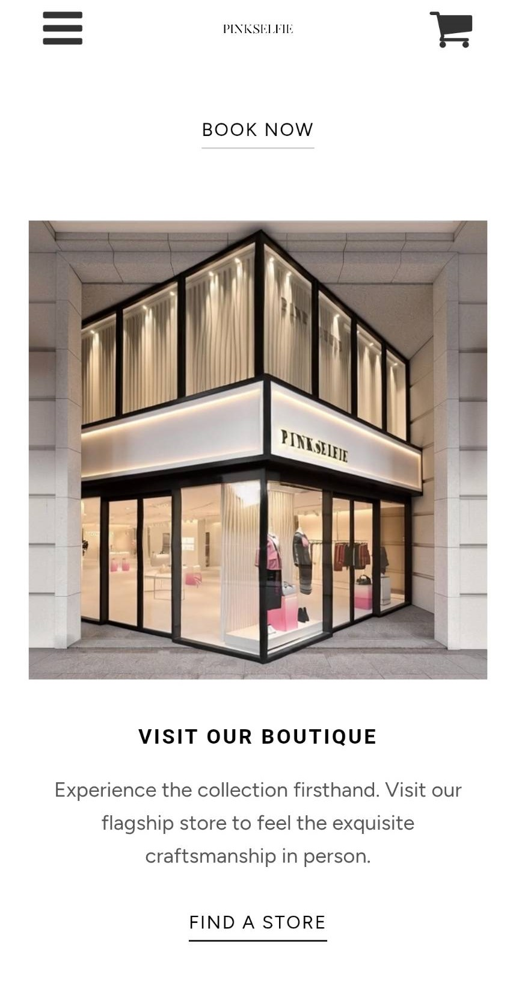
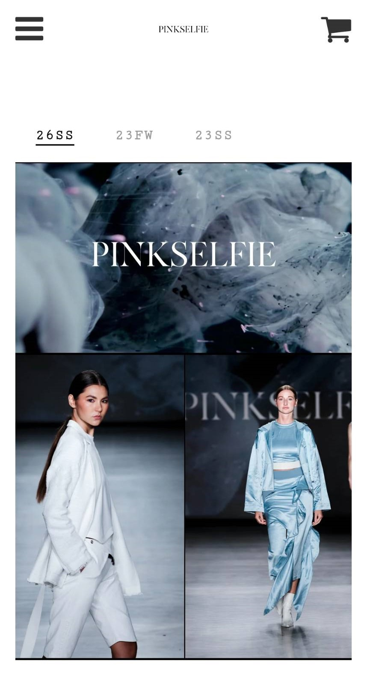
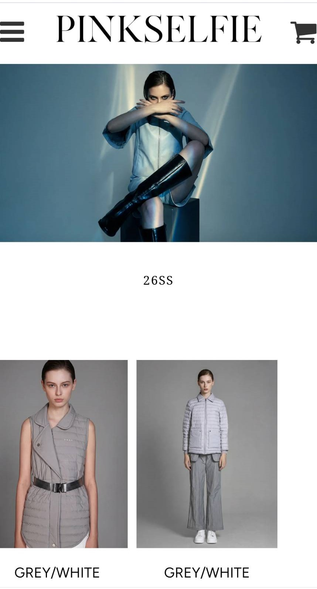
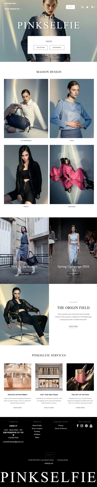

Art Direction & Campaign
統籌季節性形象大片，建立一致的高級品牌語彙。



A comprehensive visual overhaul from official website to campaign imagery.
PINKSELFIE is a fashion brand with a unique personality, but its original website was too rigid and monotonous to effectively convey the brand's distinct visual language and sense of luxury.
PINKSELFIE 是一個充滿個性的時尚品牌，但原有的官方網站版型過於制式、單調，無法有效傳遞品牌獨特的視覺語言與高級感。
This redesign program is not just about web design, but covers the overall Art Direction. Our goal is to break the framework and transform the website from a simple "sales catalog" into an "interactive fashion magazine," ensuring highly consistent tone across all social and campaign imagery.
這次的重塑計畫不僅是網頁設計，更涵蓋了整體視覺指導 (Art Direction)。我們的目標是打破框架，將網站從單純的「銷售目錄」轉變為一本「可互動的時尚雜誌」，並確保所有社群與形象影像的調性高度統一。

使用 Cormorant Garamond 襯線體帶出優雅與經典感，搭配現代簡潔的 Inter 無襯線體，創造強烈的視覺對比與時尚張力。
以經典黑白為主調突顯商品質感，並用品牌標誌性的粉色作為點綴與互動提示。

"Redefining boundaries through seamless motion and aesthetic tension."
統籌季節性形象大片，建立一致的高級品牌語彙。

精準的響應式設計，確保在手機端也能擁有流暢且沉浸的購物體驗。






運用動態視覺為社群平台 (IG/FB) 注入生命力。
